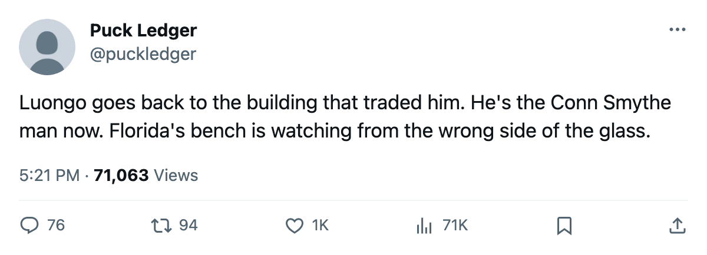

Week Ahead: Luongo plays Florida on Saturday, Richards is back Friday, and Tampa Bay brings 4 straight
The Southeast swing, a goaltender's old building, and the last 5 before Christmas
 Sam OkaforLeafs beat reporter · Queen City Telegram
Sam OkaforLeafs beat reporter · Queen City Telegram
 Toronto Maple Leafs plays 3 games on the road against
Toronto Maple Leafs plays 3 games on the road against  Atlanta Thrashers on Thursday,
Atlanta Thrashers on Thursday,  Florida Panthers on Saturday and
Florida Panthers on Saturday and  Tampa Bay Lightning on Sunday before returning home for
Tampa Bay Lightning on Sunday before returning home for  St. Louis Blues on 21 December and Atlanta again on 23 December.
St. Louis Blues on 21 December and Atlanta again on 23 December.
 Roberto Luongo95 plays at Florida on Saturday. The league carries his trade date as 25 January 2005, when the Panthers sent him to Toronto.
Roberto Luongo95 plays at Florida on Saturday. The league carries his trade date as 25 January 2005, when the Panthers sent him to Toronto.  David Aebischer89, who went the other way in the same transaction, is at home for Saturday. Luongo has 14 starts this season, an overall of 95, and 1 contract year remaining on $1.60M. Florida Panthers is 8-15-3 with 27 points, fourth in the Southeast.
David Aebischer89, who went the other way in the same transaction, is at home for Saturday. Luongo has 14 starts this season, an overall of 95, and 1 contract year remaining on $1.60M. Florida Panthers is 8-15-3 with 27 points, fourth in the Southeast.
The Lightning arrive on 4 straight
 Brad Richards87 returns on 17 December, the day before the Florida game. He has 15 points in 30 games and is on $6.70M across 4 contract years.
Brad Richards87 returns on 17 December, the day before the Florida game. He has 15 points in 30 games and is on $6.70M across 4 contract years.  Marian Gaborik99 returns on 25 December with a leg injury, 8 points in 17 games, $11.90M on 5 years.
Marian Gaborik99 returns on 25 December with a leg injury, 8 points in 17 games, $11.90M on 5 years.
Tampa Bay Lightning visits the Air Canada Centre on Sunday on a 4-game win streak, including a 4-3 overtime win at  Minnesota Wild on 10 December and a 4-2 win at
Minnesota Wild on 10 December and a 4-2 win at  Montreal Canadiens on 12 December. The Lightning are 13-9-5 with 37 points.
Montreal Canadiens on 12 December. The Lightning are 13-9-5 with 37 points.  Jeff Halpern77, Tampa Bay's centre, is out with an abdomen injury until 13 January. Toronto won the only meeting this season, 4-3 at home on 3 December.
Jeff Halpern77, Tampa Bay's centre, is out with an abdomen injury until 13 January. Toronto won the only meeting this season, 4-3 at home on 3 December.
Atlanta Thrashers opens the week on Thursday. Atlanta is 9-15-2 with 24 points, 4-11 on the road.  Milan Hnilicka80 has moved to the starting goaltender slot after
Milan Hnilicka80 has moved to the starting goaltender slot after  Byron Dafoe84 was pulled from the position this week.
Byron Dafoe84 was pulled from the position this week.  Andy Sutton75 returns from an arm injury on game day. Toronto won the first meeting, 6-4.
Andy Sutton75 returns from an arm injury on game day. Toronto won the first meeting, 6-4.
The last two before Christmas
St. Louis Blues visits on 21 December. St. Louis is 18-6-3 with 41 points, first in the Central.  Barret Jackman86 plays the club that traded him on 4 March 2005. Atlanta returns to Toronto on 23 December.
Barret Jackman86 plays the club that traded him on 4 March 2005. Atlanta returns to Toronto on 23 December.
Goalie note
Luongo is at 14 starts now, up from 11 on 8 December. His morale reads 82, up from 79 that same date, with 1 contract year left. Mikael Tellqvist73 sits at -5 on the Bureau's Development Index, an overall of 73 against a base of 77, with 8 starts in 30 games. Maxime Ouellet86 has 8 starts and an overall of 86.
